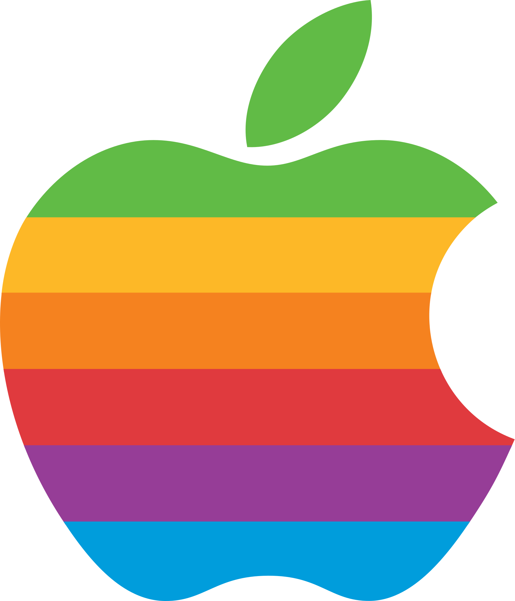
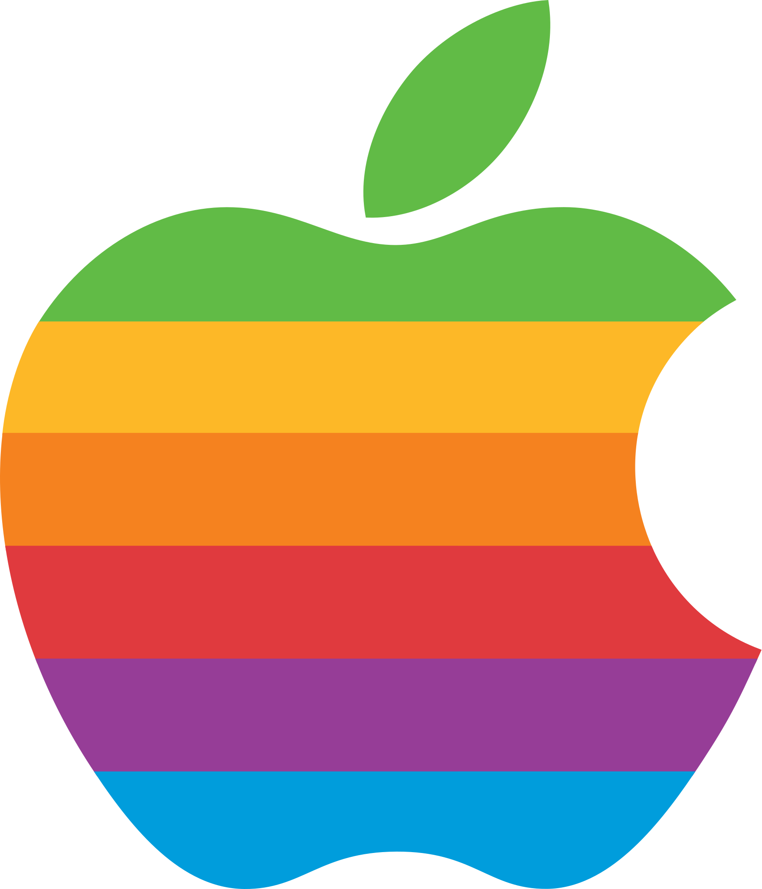

.png) 

Think different.
This logo was designed by Ron Wayne, one of the co-founders of Apple along with Steve Jobs and Steve Wozniak.This logo was only used for the Apple I. A replacement was soon sought, as it was too detailed to be easily reproduced on computers and was thought "too intellectual" by Steve Jobs.
The new logo was designed by Ron Janoff, a graphic designer at the Regis McKenna advertising/pr agency. According to Janoff, the only brief for the design was "don't make it cute". Janoff presented several concepts including color and monochrome as well as metallic designs, both with and without the bite, all in the same basic shape. Janoff added the bite because the abstract shape risked being confused with other fruits, such as cherries. From these, Steve Jobs selected the now-iconic rainbow logo with a bite. The choice of a colorful logo partly reflected the fact that the Apple II could display color images, which was a rarity at the time. It was also felt to be more accessible than alternatives.